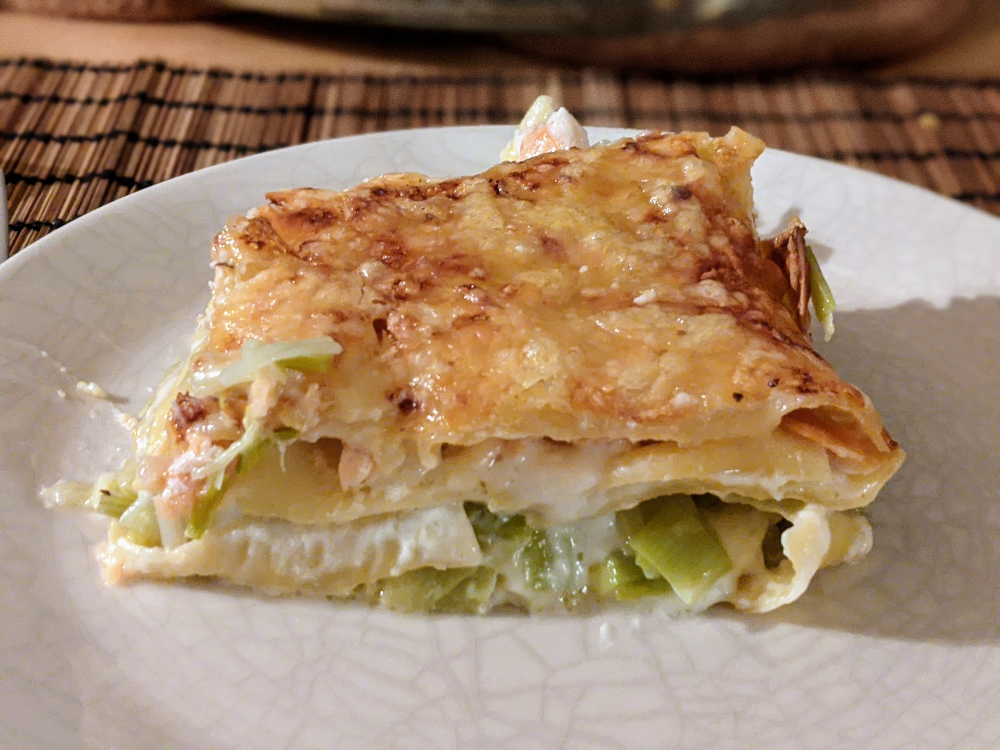

Lasagnes saumon-poireaux

Pour 3-4 personnes :
- Une dizaine de plaques de lasagnes
- 4 ou 5 blancs de poireaux
- 2 darnes ou filets de saumon
- Une ou deux tranches de saumon fumé
- 50 cl de béchamel
- Gruyère râpé
- Beurre
- Sel, poivre
- Faire bouillir de l'eau dans une casserole assez grande, et faire préchauffer le four à 200°C environ.
- Émincer les blancs de poireaux, et les faire revenir un bon bout de temps dans du beurre, jusqu'à ce qu'ils roussissent.
- Pendant ce temps, passer les darnes de saumon au micro-ondes une minute à peine à basse puissance, juste pour pouvoir les émietter facilement. Dans l'eau bouillante, plonger les feuilles de lasagnes quelques secondes.
- Beurrer un plat, et y poser successivement un peu de béchamel, une plaque de lasagne, le saumon fumé, une plaque de lasagne, les poireaux, une plaque de lasagne, le saumon émietté, encore une plaque, une bonne partie de la béchamel restante, une dernière plaque, le reste de béchamel, et saupoudrer le tout de gruyère râpé.
- Enfourner, faire cuire 30 minutes. Servir chaud.
Retour à la liste des recettes